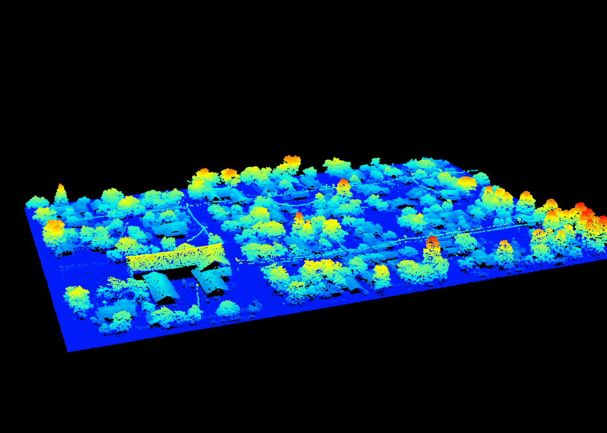
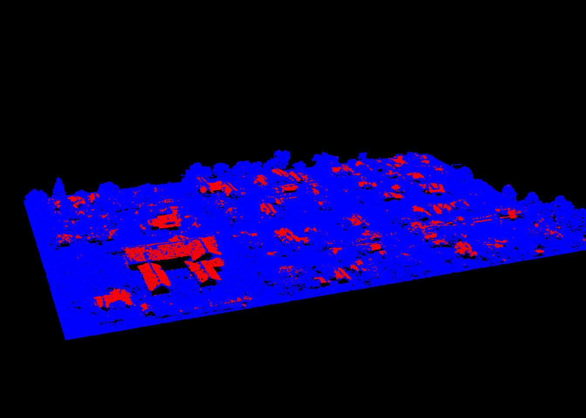
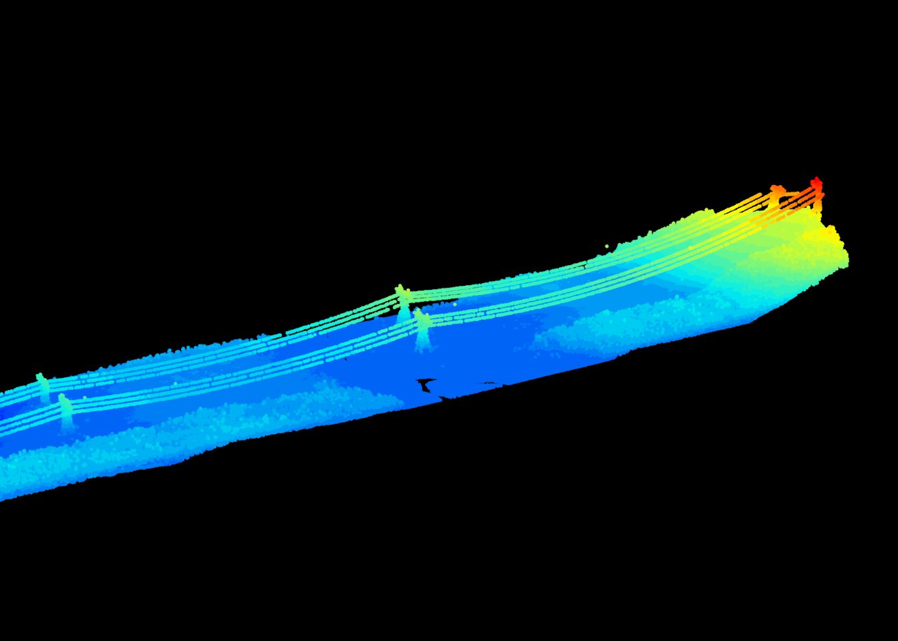
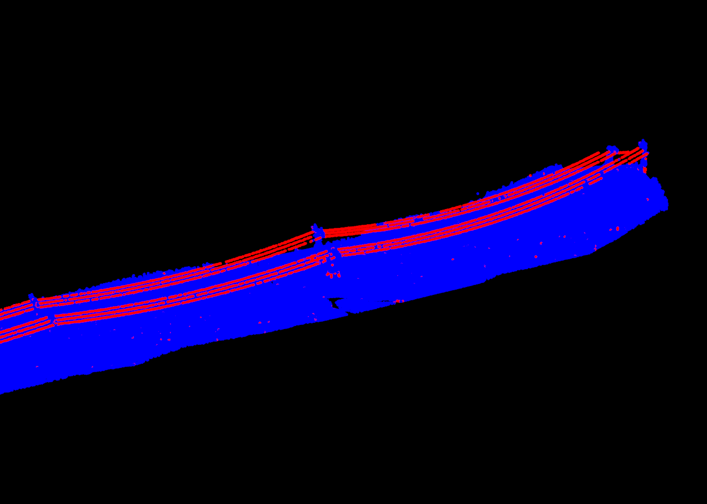
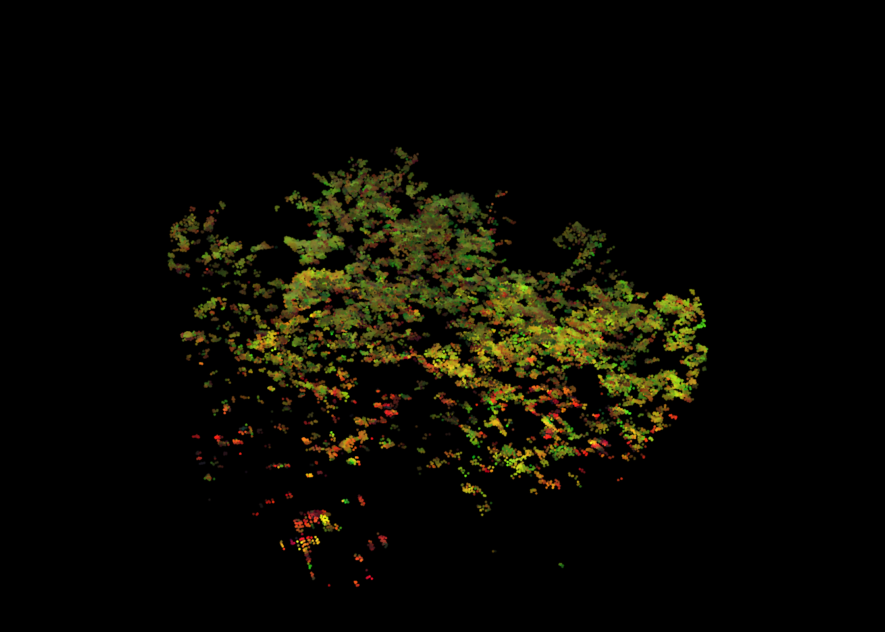

13 Derived metrics at point level
13.1 Overview
The “point” level of regularization corresponds to the computation of derived metrics for each point of the point cloud using its neighborhood to define a local subset. The point_metrics() function allows calculation of point-based metrics and works like cloud_metrics(), grid_metrics(), hexbin_metrics(), tree_metrics() or voxel_metrics() seen in chapter 8, 9, 10, 11 and 12. Refer to these sections for a more comprehensive overview.
For each point, the neighbourhood can be either:
- The k nearest neighbors
- The points within a sphere centered on the processed point, or
- The k nearest neighbors but with a limited radius search.
The syntax for these 3 options is given below:
LASfile <- system.file("extdata", "Megaplot.laz", package="lidR")
las <- readLAS(LASfile) # read file
metrics <- point_metrics(las, ~list(imean = mean(Intensity)), k = 7) # 1
metrics <- point_metrics(las, ~list(imean = mean(Intensity)), r = 3) # 2
metrics <- point_metrics(las, ~list(imean = mean(Intensity)), k = 7, r = 3) # 3The output is a data.table with the ID of the reference points and the metric(s) for each.
metrics
#> pointID imean
#> 1: 1 41.428571
#> 2: 2 41.428571
#> 3: 3 33.714286
#> 4: 4 3.000000
#> 5: 5 29.285714
#> ---
#> 81586: 81586 3.857143
#> 81587: 81587 18.333333
#> 81588: 81588 3.285714
#> 81589: 81589 4.500000
#> 81590: 81590 4.500000Instead of the ID, one may prefer to get the coordinates with xyz = TRUE:
It is also possible to process a selection of points (excluding some points) without creating a copy of the point cloud. In the following, the mean intensity is computed excluding outliers with an intensity above 100. No metric is computed for outliers, and they are not used to get the local neighborhood of the other points.
metrics <- point_metrics(las, ~list(imean = mean(Intensity)), k = 7, filter = ~Intensity < 100 ) # calculate mean intensity and exclude outliers
metrics
#> pointID imean
#> 1: 1 41.428571
#> 2: 2 41.428571
#> 3: 3 33.714286
#> 4: 4 16.571429
#> 5: 5 29.285714
#> ---
#> 81456: 81586 3.857143
#> 81457: 81587 18.142857
#> 81458: 81588 3.285714
#> 81459: 81589 3.857143
#> 81460: 81590 3.85714313.2 Applications
13.2.1 Roof segmentation
Roofs are flat areas. Limberger et al. (2015) described a method to find flat areas in a point clouds using an eigen values decomposition. Using a user-defined function we can use point_metrics() to create this algorithm. In this example we will use the following urban scene:

First we need to define a function that computes the eigen value decomposition of a set of points and estimates if the set of points is flat according to the Limberger et al. (2015) criteria.
is.planar = function(x, y, z, th1 = 25, th2 = 6) {
xyz <- cbind(x,y,z)
cov_m <- cov(xyz)
eigen_m <- eigen(cov_m)$value
is_planar <- eigen_m[2] > (th1*eigen_m[3]) && (th2*eigen_m[2]) > eigen_m[1]
return(list(planar = is_planar))
}We then apply this function using 20 neighbors. We also use filter = ~Classification != LASGROUND to not process points classified as ground. We do this first, because the scene is normalized so by definition each ground point is expected to be part of a flat planar surface, and second, because it will speed-up computation because fewer points will be considered.
We finally merge the output with the point cloud to visualize the result:
las <- add_attribute(las, FALSE, "planar")
las$planar[M$pointID] <- M$planar
plot(las, color = "planar")
We can eventually set a valid classification (LASBUILDING) to those points:
The function is.planar() is highly inefficient because eigen() is very slow. We can rewrite the eigen decomposition in C++ with Rcpp to make the function 10 times faster!
Rcpp::sourceCpp(code = "
#include <RcppArmadillo.h>
// [[Rcpp::depends(RcppArmadillo)]]
// [[Rcpp::export]]
arma::vec eigen_values(arma::mat A) {
arma::mat coeff, score;
arma::vec latent;
arma::princomp(coeff, score, latent, A);
return(latent);
}")
is.planar = function(x, y, z, th1 = 25, th2 = 6) {
xyz <- cbind(x,y,z)
eigen_m <- eigen_values(xyz)
is_planar <- eigen_m[2] > (th1*eigen_m[3]) && (th2*eigen_m[2]) > eigen_m[1]
return(list(planar = is_planar))
}We can do this… but we know that not everyone is well versed in C++. lidR therefore has a dedicated and even faster function (segment_shape()) for this specific task because we believe that it’s of high interest to provide a specialized and faster version of this tool.
13.2.2 Lake and wire segmentation
Eigen value decomposition applied using point_metrics() opens a lot of possibilities. For example, by tweaking the previous example we can design a lake segmentation algorithm. A lake is a planar region with a vertical normal vector, so to create a lake segmentation we simply need to add such constraints in is.planar().
We can also design a wire segmentation algorithm. For a wire we can change the Limberger et al. (2015) constrains to enable the detection of elongated linear features instead of flat feature.
is.linear = function(x, y, z, th = 10) {
xyz <- cbind(x,y,z)
eigen_m <- eigen_values(xyz)
is_linear <- th*eigen_m[3] < eigen_m[1] && th*eigen_m[2] < eigen_m[1]
return(list(linear = is_linear))
}

Again, lidR has a dedicated function for this specific task because we believe that it is of high interest to provide a specialized and faster version of this tool.
13.2.3 Multi-spectral coloring
point_metrics() is not limited to eigen value related metrics. It is only limited by a users imagination. In the following example we will demonstrate how it an be used to attribute false colors to a multi-spectral point cloud. Multi-spectral ALS data are sampled with 3 scanners each emitting a different wavelength. The point cloud is usually provided in the form of 3 .las files where each file corresponds to a spectral wavelength. No matter the actual wavelength, we can consider the first band as blue, the second as red and the third as green, and thus consider that each point has a pure color.
f1 <- "data/chap11/PR1107_c1_ar_c.laz"
f2 <- "data/chap11/PR1107_c2_ar_c.laz"
f3 <- "data/chap11/PR1107_c3_ar_c.laz"
las <- readMSLAS(f1, f2, f3, filter = "-keep_z_below 300")
plot(las, color = "ScannerChannel", size = 5)
We now want to attribute an RGB value to each point. A single point being sampled with a single ‘color’ we need to use its neighborhood to define 3 bands. For each point we look in its neighbourhood, where some points are red, some are blue, and some are green. We average the intensities of each color and we consider these 3 values as the RGB color of the central point. Because some points are likely to have 0 red/blue/green neighbours we can set R, G, and B equal to NA for those points and later discard those points.
set.color = function(intensity, channel)
{
# Split the intensities of each channel
i1 <- intensity[channel == 1]
i2 <- intensity[channel == 2]
i3 <- intensity[channel == 3]
# If one channel is missing return RGB = NA
if (length(i1) == 0 | length(i2) == 0 | length(i3) == 0)
return(list(R = NA_integer_, G = NA_integer_, B = NA_integer_))
# Average and normalise the intensities
i1 <- as.integer(mean(i1))
i2 <- as.integer(mean(i2))
i3 <- as.integer(mean(i3))
if (i1 > 255L) i1 <- 255L
if (i2 > 255L) i2 <- 255L
if (i3 > 255L) i3 <- 255L
return(list(R = i1, G = i2, B = i3))
}We can then apply this function with point_metrics() using a spherical neighborhood. The next steps being to assign the output of point_metrics() back into the LAS object for a nice display.
M <- point_metrics(las, ~set.color(Intensity, ScannerChannel), r = 0.5)
las <- add_lasrgb(las, M$R, M$G, M$B)
colored <- filter_poi(las, !is.na(R)) # remove RGB = NA
plot(colored, color = "RGB", size = 3)
This method is a bit naive ‘as is’. First, the intensities returned by each channel are not comparable and required to be normalized. We could also argue about the choice of discarding RGB = NA. Instead we could have chosen to set a pure color. To finish, enforcing a maximum value to 255 works in this specific example because very few intensity values are actually above 255 but is meaningless in a general case. Either way, this is only a demo to show how to think out of the box with point_metrics().
13.2.4 Outlier filtering
An outlier is a point that is alone compared to other points. Outliers are usually high points with no close neighbors. The term “no close neighbor” can have several formal definitions such as no neighbors closer than x meters or less than n neighbors within a distance x meter among others. In all cases, it can be estimated with metrics and thus point_metrics() enables the design of an outlier filter method.
Perhaps a potential exercise for the reader :) .